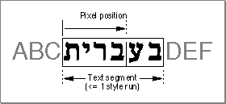
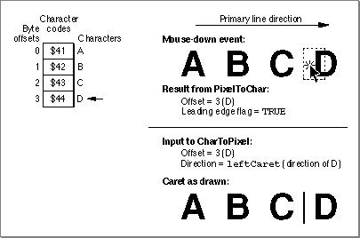
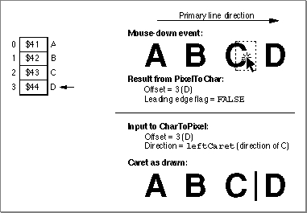
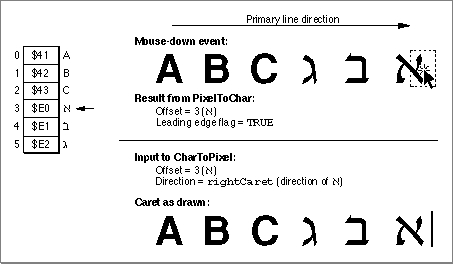
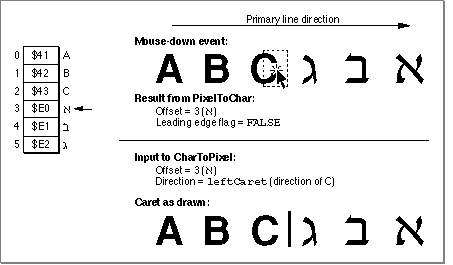
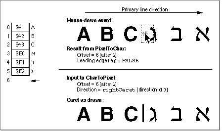
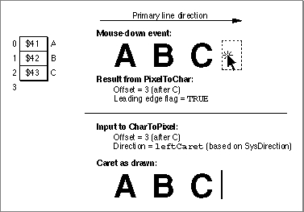

Drawing Carets and Highlighting
This section discusses how to determine a caret position to be used to mark an insertion point or endpoint for highlighting a range of text. This section describes how toFor a discussion of the conventions underlying the relationship of a character at a byte offset to a caret position for unidirectional text and text at a direction boundary, see the treatment of caret handling and highlighting in the chapter "Introduction to Text on the Macintosh" in this book.
- determine the byte offset of a character whose glyph is closest to an onscreen
pixel location where a mouse-down event occurred- determine a caret position from a byte offset, and draw a caret to mark an
insertion point- locate the endpoints for a selection range in order to highlight it, using the byte
offsets at characters that begin and end the segment of text to be highlightedGenerally, an application draws and blinks the caret in an active document window
from its idle-processing procedure in response to a null event. If your application uses TextEdit, you can call theTEIdleprocedure to do this. If your application does not
use TextEdit, you are responsible for drawing and blinking the caret.You should check the keyboard script and change the onscreen pixel location where you draw the caret, if necessary, to synchronize the caret with the keyboard script. The caret marks the insertion point where the next character is to be entered, and when the user changes the keyboard script, the caret location can change. (For more information, see "Synchronizing the Caret With the Keyboard Script" on page 3-56.)
You call
PixelToCharfrom within a loop that iterates through the style runs on a line of text until you locate the byte offset of the character associated with the input pixel location. Once you have the byte offset, you callCharToPixelto get the pixel location of the caret position. If you already have the byte offset, you do not need to callPixelToChar. TheCharToPixelfunction returns the length in pixels from the left edge of the text segment to the caret position corresponding to that character. (The text segment that you pass toCharToPixelcan be a complete style run or the portion of a style run that fits on the line.)Once you have the pixel location of the caret position within the context of the text segment, you must convert it to a pixel location relative to the entire display line's left margin. To get the correct display line pixel location, you lay out the line of text, measuring the screen pixel width of each style run from left to right up to the text segment that contains the caret position, then add the screen pixel width of the caret position to the sum of all the preceding style runs. Once you have the pixel location relative to the display line's left margin, you can draw the caret. Figure 3-8 shows Hebrew text between two runs of English text on a line.
CharToPixelandPixelToCharrecognize the pixel location in the Hebrew text relative to the left edge of the Hebrew style run, although the left margin of the display line begins with the English text.Figure 3-8 What pixel position means for
CharToPixelandPixelToChar
Converting an Onscreen Pixel Location to a Byte Offset
You need to find the byte offset and the text direction of the character that corresponds to a glyph onscreen in order to display the caret correctly. You need this information to mark an insertion point with a caret, select words, determine the endpoints for highlighting a range of text, and determine where to break a line of text. You can use thePixelToCharfunction to get this information.The
PixelToCharfunction returns a byte offset and a Boolean value. The Boolean flag tells you whether the input pixel location is on the leading edge or the trailing edge of the glyph.If the primary line direction is left to right, before means to the left of all the glyphs for the characters in the text segment, and after means to the right of all these glyphs. If the primary line direction is right to left, before and after hold the opposite meanings.
- When the input pixel location is on the leading edge of the glyph,
PixelToCharreturns the byte offset of that glyph's character and aleadingEdgeflag ofTRUE. (If the glyph represents multiple characters, it returns the byte offset of the first of these characters in memory.)- When the input pixel location is on the trailing edge of the glyph,
PixelToCharreturns the byte offset of the first character in memory following the character or characters represented by the glyph, and aleadingEdgeflag ofFALSE.- When the input pixel location is before the leading edge of the first glyph in the displayed text segment,
PixelToCharreturns the byte offset of the first character in the text segment and aleadingEdgeflag ofFALSE.- When the input pixel location is after the trailing edge of the last glyph in the displayed text segment,
PixelToCharreturns the next byte offset in memory, the one after the last character in the text segment, and aleadingEdgeflag ofTRUE.Finding a Caret Position and Drawing a Caret
Once you have a byte offset, you need to convert it to a caret position. ThePixelToCharandCharToPixelfunctions work together to help you determine a caret position. You use the byte offset thatPixelToCharreturns as input toCharToPixel. TheCharToPixelfunction requires adirectionparameter to determine whether to place the caret for text with a left-to-right or right-to-left direction. You base the value of thedirectionparameter on theleadingEdgeflag thatPixelToCharreturns.When a mouse-down event in text occurs, if
PixelToCharreturns aleadingEdgeflag ofTRUE, you passCharToPixelthe text direction of the character whose byte offsetPixelToCharreturns. Figure 3-9 illustrates a simple case. The user clicks on the leading edge of the glyph of character D;PixelToCharreturns byte offset 3 and aleadingEdgeflag ofTRUE. You then callCharToPixel, passing it byte offset 3 and adirectionparameter ofleftCaret, based on the text direction of the character D. TheCharToPixelfunction returns the pixel location equivalent to the caret position; now you can draw the caret as shown, on the leading edge of D.Figure 3-9 Caret position for a leading-edge mouse-down event

IfPixelToCharreturns aleadingEdgeflag ofFALSE, it returns the next byte offset in memory, not the one on whose trailing edge the mouse-down event occurred. You still base the value of thedirectionparameter on the character of the glyph at whose trailing edge the mouse-down event occurred, but this character is the one in memory that is before the byte offset thatPixelToCharreturned.Figure 3-10 illustrates this for the same simple case. The user clicks on the trailing edge of the glyph of character C;
PixelToCharreturns byte offset 3, the byte offset of the next character (D) in memory, and aleadingEdgeflag ofFALSE. You then callCharToPixel, passing it byte offset 3 and a direction parameter ofleftCaret, based on the text direction of the character C. TheCharToPixelfunction returns the pixel location equivalent to the caret position; now the application can draw the caret as shown, on the trailing edge of C, which is the same position as the leading edge of D.Figure 3-10 Caret position for a trailing-edge mouse-down event

When a character falls on a direction boundary, the case is more complicated. In display order, a direction boundary can occur on the trailing edges of two glyphs, the leading edges of two glyphs, or at the beginning or end of a text segment. The same rules apply for callingPixelToCharandCharToPixel, but the results can be different.Figure 3-11 shows what happens when the user clicks on the leading edge of the
glyph , whose character falls on a direction boundary;PixelToCharreturns aleadingEdgeflag ofTRUEand a byte offset of 3. You pass this byte offset and a direction ofrightCaret, the text direction for Hebrew, toCharToPixel. TheCharToPixelfunction returns the caret position on the leading edge of , and you draw the caret there.Figure 3-11 Caret position for a leading-edge mouse-down event at a direction boundary

Figure 3-12 shows what happens when the user clicks on the trailing edge of the glyph C (byte offset 2). ThePixelToCharfunction returns byte offset 3 (the Hebrew character ) and aleadingEdgeflag ofFALSE. You pass this byte offset and adirectionparameter ofleftCaret, the text direction for English, toCharToPixel. In this case,CharToPixelreturns a caret position on the trailing edge of C, which is where you draw the caret.Figure 3-12 Caret position for a trailing-edge mouse-down event at a direction boundary

Figure 3-11 and Figure 3-12 show how one offset can yield two caret positions.
- Using a dual caret
- If your application is configured to use a dual caret, you must call
CharToPixeltwice to draw the caret. For example, in Figure 3-12, you would call it once with aleftCaretdirection and again with arightCaretdirection, both times for byte offset 3. You always draw the high (primary) caret at the caret position obtained when the direction parameter equals the primary line direction. For more information, see the discussion of caret positions at direction boundaries in the chapter "Introduction to Text on the Macintosh" in this book.
Figure 3-13, when compared with Figure 3-12, shows how two offsets can yield one
caret position. In Figure 3-13, the user clicks on the trailing edge of the glyph �. ThePixelToCharfunction returns byte offset 6 and aleadingEdgeflag ofFALSE. (Although there is no character code associated with byte offset 6, it is the memory position of the next character to be entered.) You then callCharToPixel, passing it byte offset 6 and adirectionparameter ofrightCaret, the text direction for Hebrew. TheCharToPixelfunction returns the pixel location on the trailing edge of the glyph �.Figure 3-13 Caret position for a trailing-edge mouse-down event at a direction boundary

There is one additional complication that occurs at the ends of a text segment that is the only style run on a line, and at the outer end of a text segment that is the rightmost
or leftmost style run on a line. Again, the rules for callingPixelToCharandCharToPixelare the same. Here is how they are interpreted for these cases. If a user clicks the mouse before the text segment that is at the beginning of a line,PixelToCharreturns a leading edge value ofFALSEand a byte offset of 0. (The first character of a text segment that you pass toPixelToCharis always at byte offset 0.)If a user clicks the mouse after the text segment that is at the end of a line,
PixelToCharreturns a leading edge value ofTRUEand the next byte offset in memory, following the last character in the text segment.Figure 3-14 shows what happens when a mouse-down event occurs beyond the last glyph of the text segment. The
PixelToCharfunction returns byte offset 3 and aleadingEdgeflag ofTRUE. You pass this byte offset and adirectionparameter ofleftCarettoCharToPixel. In this case, the direction parameter is based on the
value ofSysDirectionbecause there isn't a character in memory associated with byte offset 3. TheCharToPixelfunction returns a caret position on the trailing edge of C, which also marks the insertion point of the next character to be entered. This is where you draw the caret.Figure 3-14 Caret position for a mouse-down event beyond the last glyph of the text segment

Listing 3-9 is a sample routine that converts mouse clicks to caret positions for drawing the caret or for highlighting a selection range. It determines a text offset (charLoc) from a mouse-down position and turns it into caret positions or ends of highlighting rectangles (leftSide,rightSide). It tracks the mouse and dynamically draws highlighting as the cursor is moved across the text. The routine callsHiliteTextto determine selection ranges. It callsCharacterTypeto determine the primary and secondary caret positions for mixed-directional text. It draws the caret or highlighting rectangles by calling the application routineMyAddSelectionArea.Listing 3-9 Drawing the caret and highlighting a selection range
PROCEDURE MyDoTextClick(w: WindowPtr; where: POINT; cmdKeyIsDown, shiftKeyIsDown, optionKeyIsDown: BOOLEAN); VAR txLineH: TextLineHandle; horizontalPosition: FIXED; leadingEdge: BOOLEAN; widthRemaining: FIXED; charLoc: INTEGER; selectionOffsets: OffsetTable; c: INTEGER; leftSide, rightSide: INTEGER; prevMouseLoc: POINT; direction: INTEGER; BEGIN txLineH := TextLineHandle(GetWRefCon(w)); {get the text} IF txLineH <> NIL THEN BEGIN LockHandleHigh(txLineH); WITH txLineH^^ DO BEGIN {initialize character offsets to invalid values} IF NOT shiftKeyIsDown THEN leftOffset := -1; rightOffset := -1; {initialize mouse position to invalid values} SetPt(prevMouseLoc, kMaxInteger, kMaxInteger); {track mouse and display text selection or caret } REPEAT IF DeltaPoint(where, prevMouseLoc) <> 0 THEN BEGIN {mouse has moved:} prevMouseLoc := where; {adjust mouse position relative to lineStart, } { convert mouse position's INTEGER to FIXED, } { assume style run position doesn't matter, } { assume no scaling (1: 1 ratio)} charLoc := PixelToChar(@textBuffer, textLength, 0, BitShift(where.h - lineStart.h, 16), leadingEdge, widthRemaining, smOnlyStyleRun, POINT(kOneToOneScaling), POINT(kOneToOneScaling)); IF charLoc <> rightOffset THEN BEGIN {character location has changed:} IF leftOffset = -1 THEN {anchor position hasn't been set yet:} leftOffset := charLoc; {set anchor position} rightOffset := charLoc; {save new caret pos.} {erase previous selection; note that it } {would be more optimal to erase only the } { difference between old and new selection} MyDeleteSelectionAreas(w, txLineH); {now get the selection ranges to highlight} HiliteText(@textBuffer, textLength, leftOffset, rightOffset, selectionOffsets); {check whether a range of text is selected, } { or if it's only an insertion point} IF selectionOffsets[0].offFirst <> selectionOffsets[0].offSecond THEN BEGIN {it's a selection range:} c := 0; {offsetPairs are zero-based} REPEAT leftSide := CharToPixel(@textBuffer, textLength, 0, selectionOffsets[c].offFirst, smHilite, smOnlyStyleRun, POINT(kOneToOneScaling), POINT(kOneToOneScaling)); rightSide := CharToPixel(@textBuffer, textLength, 0, selectionOffsets[c].offSecond, smHilite, smOnlyStyleRun, POINT(kOneToOneScaling), POINT(kOneToOneScaling)); {put rectangle ends in right order} IF rightSide < leftSide THEN SwapIntegers(leftSide, rightSide); {now draw the rectangle} MyAddSelectionArea(txLineH, leftSide, lineStart.v - caretHeight, rightSide,lineStart.v, TRUE); c := c + 1; UNTIL (selectionOffsets[c].offFirst = selectionOffsets[c].offSecond) OR (c = 3); END ELSE BEGIN {it's a caret position, not a range:} { calculate caret and draw it} {position of caret depends on character's } { direction; call CharacterType to find it} IF BAND(CharacterType(@textBuffer, selectionOffsets[0].offFirst), smCharRight) <> 0 THEN direction := smRightCaret ELSE direction := smLeftCaret; leftSide := CharToPixel(@textBuffer, textLength, 0, selectionOffsets[0].offFirst, direction, smOnlyStyleRun, POINT(kOneToOneScaling), POINT(kOneToOneScaling)); {if user has specified dual caret, call } { CharToPixel again with the opposite } { value for the direction parameter} IF documentSettings.useDualCaret THEN BEGIN IF direction = smRightCaret THEN direction := smLeftCaret ELSE direction := smRightCaret; rightSide := CharToPixel(@textBuffer, textLength, 0, selectionOffsets[0].offFirst, direction, smOnlyStyleRun, POINT(kOneToOneScaling), POINT(kOneToOneScaling)); END ELSE rightSide := leftSide; IF leftSide = rightSide THEN {it's only a single caret:} MyAddSelectionArea(txLineH, leftSide, lineStart.v - caretHeight, leftSide + kCaretWidth, lineStart.v, TRUE) ELSE BEGIN {it's a split-caret: assume upper caret } { is left-to-right text, lower caret is { right-to-left text} IF direction = smRightCaret THEN BEGIN {rightSide is right-to-left: } { use upper caret for leftSide} MyAddSelectionArea(txLineH, leftSide, lineStart.v - caretHeight, leftSide + kCaretWidth, lineStart.v - (caretHeight DIV 2), TRUE); MyAddSelectionArea(txLineH, rightSide, lineStart.v - (caretHeight DIV 2), rightSide + kCaretWidth, lineStart.v, TRUE); END ELSE BEGIN {rightSide is left-to-right: } { use lower caret for leftSide} MyAddSelectionArea(txLineH, rightSide, lineStart.v - caretHeight, rightSide + kCaretWidth, lineStart.v - (caretHeight DIV 2), TRUE); MyAddSelectionArea(txLineH, leftSide, lineStart.v - (caretHeight DIV 2), leftSide + kCaretWidth, lineStart.v, TRUE); END; END; END END; END; GetMouse(where); UNTIL NOT WaitMouseUp; END; HUnlock(Handle(txLineH)); END END; {MyDoTextClick}Synchronizing the Caret With the Keyboard Script
If the user changes the keyboard script, you can call theCharToPixelfunction to determine the caret position, specifying thedirectionparameter based on the keyboard script. However, the user may change the keyboard script between the time you draw and erase the caret. You can save the position where you drew the caret, then invert (erase) at that position again. To do this, save the direction of the keyboard script, the screen pixel width, or even the whole rectangle.Highlighting a Text Selection
To display a selection range, you typically highlight the text. This process entails converting the offsets to their display screen pixel locations, and then calling theInvertRectprocedure to display the text selection in inverse video or with a colored or outlined background.When a range of text to be highlighted is unidirectional, it is contiguous in both memory order and display order; the highlighted text constitutes a single range. When the text is bidirectional, however, it can contain characters that occur on direction boundaries. Although the characters are stored contiguously in memory, the leading edge of
one character's glyph does not constitute the trailing edge of the other in display
order. A range of mixed-directional text that is contiguous in memory can produce up to three physically separate ranges of displayed text to be highlighted. For example,
Figure 3-15 shows two separate ranges of highlighted text whose characters are contiguous in memory.Figure 3-15 Highlighting mixed-directional text
To highlight a selection range, you need the beginning and ending byte offsets of the selected text. From these offsets, you determine one or more pairs of offsets of the displayed text. Once you have the pairs of offsets, you determine the pixel locations that mark the beginning and the end of the displayed text of each pair. You can include the following steps in the inner loop of your highlighting routine to determine these values.
Once you have the pixel locations corresponding to the ends of each range of text, you must convert them to display line pixel locations that are relative to the line's left margin. (The
- You call
HiliteTextto get the individual pairs of byte offsets that encompass the onscreen ranges of text to be highlighted. TheHiliteTextprocedure always returns three pairs of offsets. This is because if a text selection contains mixed-directional text, it can consist of up to three distinct ranges of text when displayed. For unidirectional text,HiliteTextreturns one pair that contains the beginning and ending byte offsets whose text is to be highlighted, and two pairs that each include the same numbers. You can ignore any pair of duplicate numbers.- Using the offset pairs that
HiliteTextreturns, you convert each byte offset of a pair to its equivalent onscreen pixel location. You callCharToPixelonce each for the beginning and ending offsets of a pair. You might callCharToPixelup to 6 times. You must pass theCharToPixelfunction a direction parameter ofhilite, which signals it to use the primary line direction to determine the correct caret position. When you specifyhilite,CharToPixel returns the correct caret position for the glyph based on the text direction of its character.CharToPixelfunction returns the pixel location relative to the left edge of the text range for which you called it.) If you saved the line layout information and you have the screen pixel widths of the preceding style runs in display order, you can sum the widths of these style runs and add the screen pixel width thatCharToPixelreturns to the total. You must do this for the beginning and ending pixel locations that mark the text. If you did not save the screen pixel widths of the preceding style runs on the display line, you must lay out the text line again to get these values. When you have the pixel locations relative to left margin of the display line, you can highlight the text.For text that is rendered in black and white, you call the
InvertRectprocedure to highlight each distinct text range; the background color is exchanged with the foreground color. For text that is rendered in color, all pixel values of the current background color are replaced with the value of the highlighting color.Generally, the user chooses the highlighting color from the Color control panel, and the application uses this color. However, you can reset this color using the QuickDraw
HiliteColorprocedure. If a monitor is black-and-white and a highlighting color is specified, the highlighting color reverts to black.Before you call
InvertRectfor colored text, first you must clear theHiliteModelow-memory global. By default the highlight mode bit of the low-memory global variable is set to 1. You clear it by setting it to 0. After you highlight the text, you don't need to reset the bit;InvertRectresets it automatically.The easiest way to clear the highlight mode bit is to call the Toolbox Utilities'
BitClrprocedure, for example:BitClr(Ptr(HiliteMode), pHiliteBit);just before callingInvertRectusingsrcXormode. (Do not alter the other bits
inHiliteMode.)
- Note
- Routines that formerly used
Xorinversion, such asInvertRect
and the text drawing routines, will use highlight mode if thehilite
bit is clear.From assembly language,you must call thepHiliteBit selector for highlight mode when you use the BitClear trap: BCLR must use the assembly-language equate hiliteBit.For example:BCLR #hiliteBit, hiliteMode